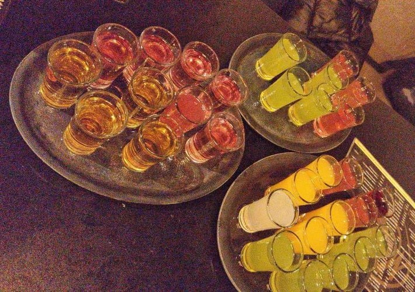
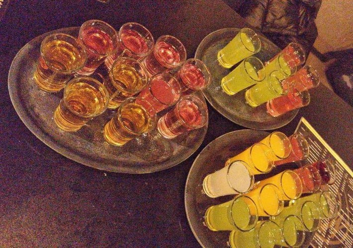
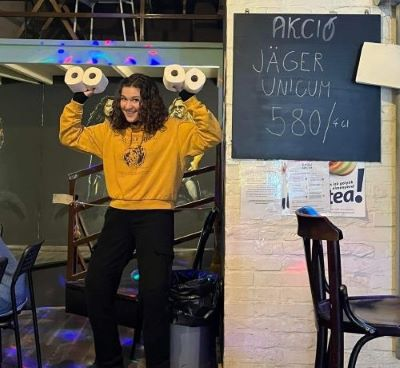
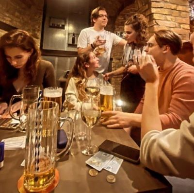
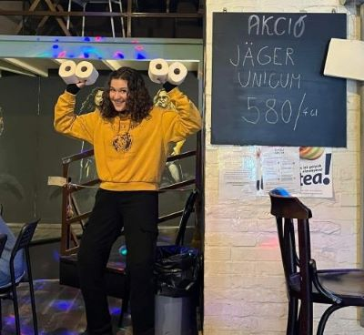
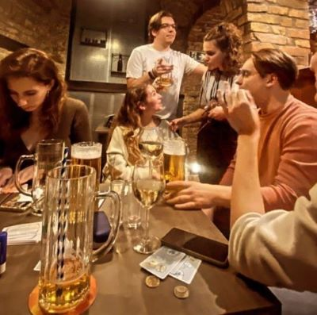
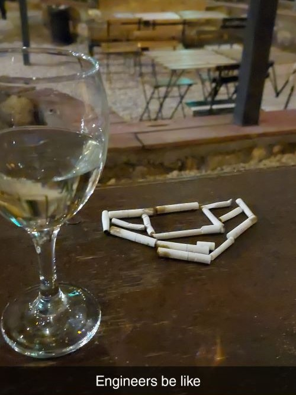
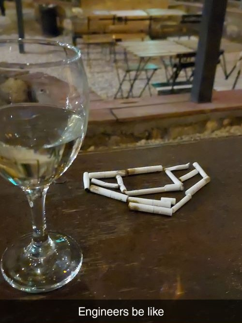

Mag
- Klasszikus pubok és a romkocsmák között áll félúton - Hangulatos, zegzugos pincehelységéről híres, ahol a foci imádók nem csak társaságra lelhetnek, de egy jó csocsó párbajban is részesülhetnek - A pultosok minden vendég igényét kielégítik, a nagy ital kínálattal egyaránt -Áraik nagyon barátságosak - Cím: Budapest, Bercsényi u. 9, 1111

 


WW club
- Elhíresült a máshol nem látott literes korsóban rendelhető sör miatt - A főpapnő kedves, de vigyázni kell vele - A szomjas szórakozni vágyóknak van lehetőségük a fenti részen nyugalomban beszélgetni, ugyanakkor tökéletes helyet biztosít a pincében található hangfal, fények és táncparkett arra, hogy megmozgassák egész testüket is - Áraikra bár hatott az infláció, középkategóriásak a közelben lévő többi kocsmához képest - Cím: Budapest, Irányi u. 25, 1056


 



Faház
- Egy gyöngyszeme a Pók utcai lakótelepnek melyet a legtöbb lokális alkoholista ismer - Bár hétköznapokon az áltag életkor 50-60 év körül mozog, addíg a legtöbb péntekre az iskolák végeztével ez lecsökken 28 év körülire - Tökéletes hely focimeccsek és forma1 futamok nézésére - A magányos alkoholista vendégek mindig nyitottak a kényelmetlenül sokáig elhúzódó és néhol rasszista ideológiákkal megspékelt eszmecserékre, ha valaki ilyen élményekre vágyna - Áraival nem lehet vetekedni a városban, már már gyanút keltően kedvezőek - Cím: Budapest, Római stny. 6, 1031


Grund
- Egy belvárosban elrejtett kocsma, melynek területe és újabbnál újabb szobái és teraszai véget nem érőek - Első látogatásra az ember elveszettnek érezheti magát a labirintushoz hasonlító elrendezése miatt, viszont a helyet hamar ki lehet ismerni - Nyáron tud a leghangulatosabb lenni a sok nyitott terasza miatt, mely nem csak a friss levegőt kedvelőknek hanem a dohányosoknak is kényelmes - Nagy társasági összejöveteleknek tökéletes választás - Az árai az egyszerű kocsmákhoz képest a felső határt verik, mindezt kompenzálni tudja a minden napon elérhető 5-7 óra között tartó 50%-os akció az összes koktélra - Cím: Budapest, Nagy Templom utca 30, 1082


 
